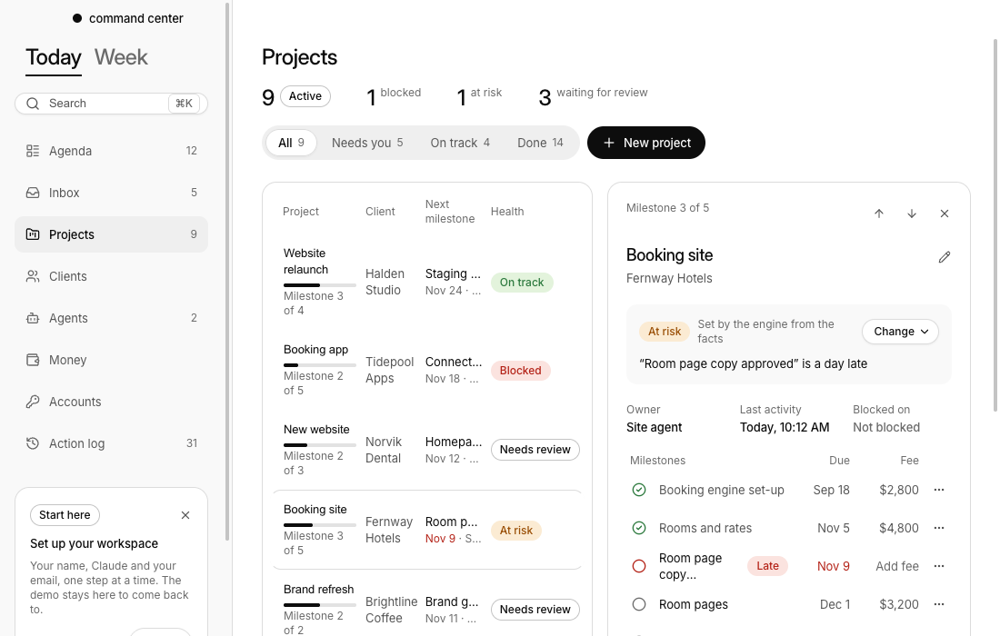
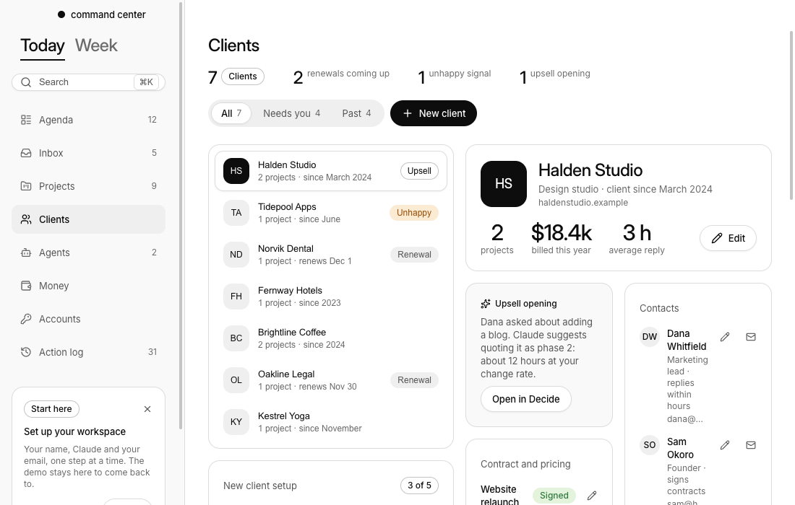
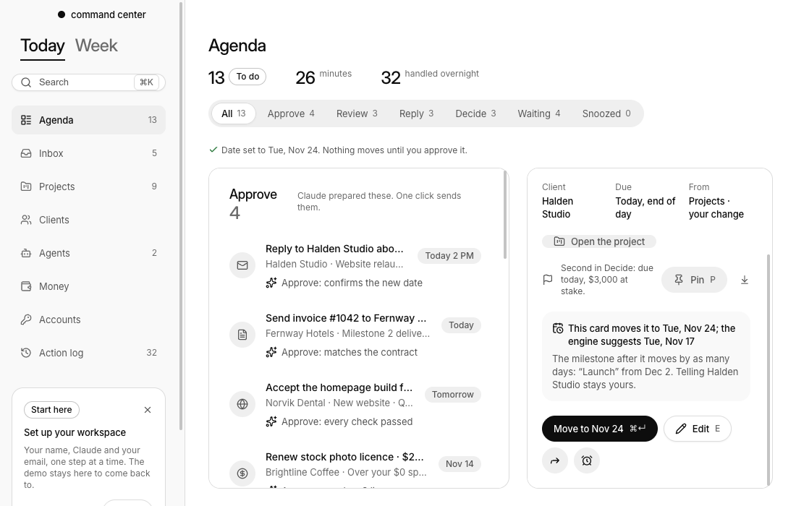

Projects and clients
You keep the facts: milestones with dates, contracts, contacts. Command Center works out each project's health and spots slips before they surprise you.

Clients
Add a client with New client: their name, what they do, their domain and since when. Their domain lets the inbox recognise new people at that client for you to confirm.
- Contacts, with email and phone. A contact's email files their mail under the client.
- Contracts as fields: fixed, hourly, monthly or yearly; amount; signed, starts, renews and ends; draft, sent, signed or ended; and the signed file itself, attached and opened in your usual app.
- Accounts: the logins and services you keep for them (see Accounts and cards).
- The new-client checklist: profile and contacts created, contract and pricing on file, project created with milestones (these tick themselves from your data), then accounts, access and card confirmed, and agents assigned with a brief.

Projects
A project belongs to a client, has an owner (you or an agent), a start date, and milestones: each with a title, a due date, an optional fee (for invoicing) and done or not. Its stage, progress and next milestone are worked out from those.
Mark a project blocked on something, with the date, and its health says so.
Health
| Health | When |
|---|---|
| Done | Everything's delivered. |
| Not started | It starts later and nothing's done yet. |
| Blocked | You marked it blocked on something. |
| At risk | A milestone has slipped, or is likely to. |
| Review | Its work is waiting for your review. |
| On track | None of the above. |
Each health comes with its why in plain words. It's worked out from the facts, never guessed by Claude, and checked after your changes, each sync and before every brief. Changes are logged with their reason, under your Update project status guardrail.
Slips
A milestone has slipped when it's past its date and not done. It's likely to miss when it's due within 3 working days while its project is blocked or has had no activity for 5 days. Either way, a card reaches Decide, once per milestone and date: what slipped and by how much, and a suggested new date (a week on, on a working day) with what moves with it. Its button is Move to that date; change the date before you approve if you like. Telling the client stays yours.

The week and your projects
The Week's planned work comes from what falls due: open agenda items, milestones not done and sent invoices. The Monday plan's priorities lean on projects at risk or blocked. See The week.
Removing a client, project, contact or milestone keeps it out of sight, with an undo in the action log. Undo won't leave an open project under a past client, or bring back a name that's been taken since.